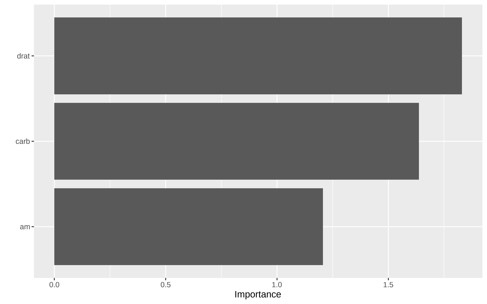

Orbital.¿Ayuda en entornos hostiles?
Introducción
No es raro encontrarse en entornos hostiles. Los que usamos R lo sabemos bien, es una batalla constante, que en gran parte tiene que ver con el desconocimiento y otras con la maldad.
Hacer cosas en la BD.
Desde los tiempos de PL/SQL anda por ahi el runrun de hacer cosas en la BD. El caso típico es hacer las transformaciones de filtrado, selección, creación de columnas y joins que hacemos en lenguajes como R, pero en la base de datos. Esto hace ya tiempo que está solucionando gracias a cosas como dbplyr y similar. De hecho, la filosofía de hazlo con una sintaxis sencilla en el frontend pero que el backend pueda cambiar se ha exportado de R a otras tecnologías, esa eRgonomía se ve por ejemplo en ibis o polars.
Otro caso más complicado es el de tener un modelo que se ha ajustado previamente y queremos usarlo para obtener predicciones. En estos casos salvo que estemos en cosas como spark o similar lo que se suele hacer es bajar los datos de la BD, usar el modelo, obtener predicciones y subir los resultados a la BD. A veces es un proceso batch o un docker u otra cosa rara, pero básicamente es eso.
Se me olvidaba que en caso de ser un modelo simple de regresión o regresión logística siempre puede uno escribir la función obtenida en forma de sql y tirar millas. Pero en otro tipo de modelos es un poco más complejo.
En las jornadas de R en Sevilla que acaban de terminar, Hannah Frick de Posit nos contó lo nuevo de tidymodels y aquí es dónde entran un par de librerías, tidypredict y orbital, la primera permite “traducir” la función de predict de un modelo a sql y la segunda traduce todo el workflow
Hagamos la prueba
Vamos a usar el ejemplo que tienen en la docu con mtcars
Como BD voy a usar bigquery, utilizo
Show the code
# tengo variables de entorno con mi mail y el proyecto de bq personal
bq_auth(email = Sys.getenv("MIGMAIL"))
mi_proyecto <- Sys.getenv("BQ_PROJECT_JLCR")
sc <- src_bigquery(mi_proyecto, dataset = NULL, max_pages = 10)Comprobamos que ha ido bien y que puedo ver una tabla que tengo ahí de prueba
#> # Source: SQL [6 x 21]
#> # Database: BigQueryConnection
#> customerID gender SeniorCitizen Partner Dependents tenure PhoneService
#> <chr> <chr> <int> <lgl> <lgl> <int> <lgl>
#> 1 9732-OUYRN Female 0 TRUE FALSE 49 TRUE
#> 2 0661-KQHNK Female 0 TRUE TRUE 6 TRUE
#> 3 4709-LKHYG Female 0 TRUE TRUE 29 TRUE
#> 4 9824-QCJPK Male 0 TRUE FALSE 36 TRUE
#> 5 4716-MRVEN Female 0 FALSE FALSE 29 TRUE
#> 6 8084-OIVBS Female 0 FALSE FALSE 11 TRUE
#> # ℹ 14 more variables: MultipleLines <chr>, InternetService <chr>,
#> # OnlineSecurity <chr>, OnlineBackup <chr>, DeviceProtection <chr>,
#> # TechSupport <chr>, StreamingTV <chr>, StreamingMovies <chr>,
#> # Contract <chr>, PaperlessBilling <lgl>, PaymentMethod <chr>,
#> # MonthlyCharges <dbl>, TotalCharges <chr>, Churn <lgl>Ahora subo una parte de mtcars a bigquery
Show the code
test <- mtcars[25:32, ]Show the code
# creamos la tabla en bigquery en miproyecto.dataset.tbname
# # borro si ya existia
# mtcars_test_db_prev <- bq_table(mi_proyecto, "churn2", "test")
# bq_table_delete(mtcars_test_db_prev)
# creo la tabla de nuevo
mtcars_test_db <- bq_table(mi_proyecto, "churn2", "test")
# subo datos a esa tabla
bq_table_upload(mtcars_test_db, test)Show the code
# compruebo qeue se ha subido
mtcars_bq <- sc |> tbl(I("churn2.test"))
mtcars_bq#> # Source: table<churn2.test> [8 x 11]
#> # Database: BigQueryConnection
#> am carb vs qsec wt drat disp hp cyl gear mpg
#> <int> <int> <int> <dbl> <dbl> <dbl> <dbl> <int> <int> <int> <dbl>
#> 1 0 2 0 17.0 3.84 3.08 400 175 8 3 19.2
#> 2 1 2 0 16.7 2.14 4.43 120. 91 4 5 26
#> 3 1 4 0 14.5 3.17 4.22 351 264 8 5 15.8
#> 4 1 6 0 15.5 2.77 3.62 145 175 6 5 19.7
#> 5 1 8 0 14.6 3.57 3.54 301 335 8 5 15
#> 6 1 1 1 18.9 1.94 4.08 79 66 4 4 27.3
#> 7 1 2 1 16.9 1.51 3.77 95.1 113 4 5 30.4
#> 8 1 2 1 18.6 2.78 4.11 121 109 4 4 21.4Entrenamos un modelo con tidymodels
Entreno un modelo simple con tidymodels, el entrenamiento se hace sobre data.frame normal de R
Show the code
train <- mtcars[1:24,]
# preproceso
rec_spec <- recipe(mpg ~ ., data = train) |>
step_normalize(all_numeric_predictors())
# instancio un modelo linear simple
lm_spec <- linear_reg(mode = "regression", engine = "lm")
# flujo que uno prepdocesamiento y modelo
wf_linear <- workflow() |>
add_recipe(rec_spec) |>
add_model(lm_spec)
# Ajusto el workflow sobre datos de train
wf_fit <- fit(wf_linear, train)
wf_fit#> ══ Workflow [trained] ══════════════════════════════════════════════════════════
#> Preprocessor: Recipe
#> Model: linear_reg()
#>
#> ── Preprocessor ────────────────────────────────────────────────────────────────
#> 1 Recipe Step
#>
#> • step_normalize()
#>
#> ── Model ───────────────────────────────────────────────────────────────────────
#>
#> Call:
#> stats::lm(formula = ..y ~ ., data = data)
#>
#> Coefficients:
#> (Intercept) cyl disp hp drat wt
#> 19.50417 1.70021 -0.50385 -0.39324 2.68970 -0.39831
#> qsec vs am gear carb
#> 0.98482 0.06173 1.43663 0.86633 -2.76451
vemos predicciones sobre test
Show the code
prediciones <- predict(wf_fit, test)
test_with_pred <- test |>
mutate(
pred = prediciones$.pred
)
test_with_pred |>
select(mpg, pred, everything())#> mpg pred cyl disp hp drat wt qsec vs am gear carb
#> Pontiac Firebird 19.2 17.02483 8 400.0 175 3.08 3.845 17.05 0 0 3 2
#> Fiat X1-9 27.3 29.26171 4 79.0 66 4.08 1.935 18.90 1 1 4 1
#> Porsche 914-2 26.0 28.64553 4 120.3 91 4.43 2.140 16.70 0 1 5 2
#> Lotus Europa 30.4 25.83187 4 95.1 113 3.77 1.513 16.90 1 1 5 2
#> Ford Pantera L 15.8 23.27644 8 351.0 264 4.22 3.170 14.50 0 1 5 4
#> Ferrari Dino 19.7 16.08932 6 145.0 175 3.62 2.770 15.50 0 1 5 6
#> Maserati Bora 15.0 10.66091 8 301.0 335 3.54 3.570 14.60 0 1 5 8
#> Volvo 142E 21.4 26.21461 4 121.0 109 4.11 2.780 18.60 1 1 4 2Uso de orbital
Con orbital podemos utilizar el workflow de tidymodels y que el preprocesamiento y la predicción se haga en la base de datos, gracias al uso de la librería tidypredict
Show the code
# Nota. no se puede usar ccomo nombre de columna en bigquery algo
# que empiece por "." Les puse un issue alos de orbital y lo arreglaron,
# pero el fix es en la versión latest, instalr con
# remotes::install_github("tidymodels/orbital")
orbital_lm_wf <- orbital(wf_fit, prefix = "prediction")
# lo aplicamos a la tabla en bigquery
predict(orbital_lm_wf, mtcars_bq)#> # Source: SQL [8 x 1]
#> # Database: BigQueryConnection
#> prediction
#> <dbl>
#> 1 17.0
#> 2 28.6
#> 3 23.3
#> 4 16.1
#> 5 10.7
#> 6 29.3
#> 7 25.8
#> 8 26.2Podemos ver el código sql por si queremos utilizarlo en un entorno hostil dónde sólo podamos ejecutar cosas con sql
Show the code
# Este sería el código en dplyr que se manda a bigquery
pred_query <- mtcars_bq |>
mutate(!!!orbital_inline(orbital_lm_wf)) |>
select(mpg, prediction, everything())
# vemos el código sql
sql_render(pred_query)#> <SQL> SELECT
#> `mpg`,
#> (((((((((19.5041666666667 + (`cyl` * 1.70020928104393)) + (`disp` * -0.503852370218672)) + (`hp` * -0.39323963869249)) + (`drat` * 2.68969716287516)) + (`wt` * -0.398305964689505)) + (`qsec` * 0.984815350290373)) + (`vs` * 0.0617323594407886)) + (`am` * 1.43662793743514)) + (`gear` * 0.86633019389466)) + (`carb` * -2.76451303896608) AS `prediction`,
#> `am`,
#> `carb`,
#> `vs`,
#> `qsec`,
#> `wt`,
#> `drat`,
#> `disp`,
#> `hp`,
#> `cyl`,
#> `gear`
#> FROM (
#> SELECT
#> (`am` - 0.25) / 0.442325868464691 AS `am`,
#> (`carb` - 2.625) / 1.24455335099716 AS `carb`,
#> (`vs` - 0.458333333333333) / 0.508977377704051 AS `vs`,
#> (`qsec` - 18.2670833333333) / 1.65471258286267 AS `qsec`,
#> (`wt` - 3.38454166666667) / 0.986562234056558 AS `wt`,
#> (`drat` - 3.51) / 0.543787042716252 AS `drat`,
#> (`disp` - 240.445833333333) / 123.862055035173 AS `disp`,
#> (`hp` - 140.25) / 59.6141579332205 AS `hp`,
#> (`cyl` - 6.33333333333333) / 1.73622946456486 AS `cyl`,
#> (`gear` - 3.41666666666667) / 0.503610155185335 AS `gear`,
#> `mpg`
#> FROM churn2.test
#> ) `q01`Podemos escribir la query en un fichero
Show the code
write(sql_render(pred_query), "mpg_lm.sql")#> SELECT
#> `mpg`,
#> (((((((((19.5041666666667 + (`cyl` * 1.70020928104393)) + (`disp` * -0.503852370218672)) + (`hp` * -0.39323963869249)) + (`drat` * 2.68969716287516)) + (`wt` * -0.398305964689505)) + (`qsec` * 0.984815350290373)) + (`vs` * 0.0617323594407886)) + (`am` * 1.43662793743514)) + (`gear` * 0.86633019389466)) + (`carb` * -2.76451303896608) AS `prediction`,
#> `am`,
#> `carb`,
#> `vs`,
#> `qsec`,
#> `wt`,
#> `drat`,
#> `disp`,
#> `hp`,
#> `cyl`,
#> `gear`
#> FROM (
#> SELECT
#> (`am` - 0.25) / 0.442325868464691 AS `am`,
#> (`carb` - 2.625) / 1.24455335099716 AS `carb`,
#> (`vs` - 0.458333333333333) / 0.508977377704051 AS `vs`,
#> (`qsec` - 18.2670833333333) / 1.65471258286267 AS `qsec`,
#> (`wt` - 3.38454166666667) / 0.986562234056558 AS `wt`,
#> (`drat` - 3.51) / 0.543787042716252 AS `drat`,
#> (`disp` - 240.445833333333) / 123.862055035173 AS `disp`,
#> (`hp` - 140.25) / 59.6141579332205 AS `hp`,
#> (`cyl` - 6.33333333333333) / 1.73622946456486 AS `cyl`,
#> (`gear` - 3.41666666666667) / 0.503610155185335 AS `gear`,
#> `mpg`
#> FROM churn2.test
#> ) `q01`Un modelo un poco más complejo
Lo típico es que se usen modelo algo más complejos.
Show the code
rec_spec <- recipe(mpg ~ ., data = train) %>%
step_normalize(all_numeric_predictors())
xgb_spec <- boost_tree(
trees = 10,
tree_depth = 3, min_n = 2,
) %>%
set_engine("xgboost") %>%
set_mode("regression")
xgb_wf <- workflow() %>%
add_recipe(rec_spec) |>
add_model(xgb_spec)
xgb_fit <- fit(xgb_wf, mtcars)Show the code
orbital_xgb <- orbital(xgb_fit, prefix = "prediction")podemos predecir en la bd usando predict(orbital_object, tabla_remota o también usar sintaxis de dplyr y ver el código sql generado.
Show the code
# Este sería el código en dplyr que se manda a bigquery
pred_query_xgb <- mtcars_bq |>
mutate(!!!orbital_inline(orbital_xgb)) |>
select(mpg, prediction, everything()) |>
arrange(mpg)
pred_query_xgb#> # Source: SQL [8 x 12]
#> # Database: BigQueryConnection
#> # Ordered by: mpg
#> mpg prediction am carb vs qsec wt drat disp hp cyl
#> <dbl> <dbl> <int> <int> <int> <dbl> <dbl> <dbl> <dbl> <dbl> <dbl>
#> 1 15 14.2 1 8 0 -1.82 0.361 -0.106 0.567 2.75 1.01
#> 2 15.8 15.1 1 4 0 -1.87 -0.0483 1.17 0.970 1.71 1.01
#> 3 19.2 16.5 0 2 0 -0.447 0.642 -0.966 1.37 0.413 1.01
#> 4 19.7 19.8 1 6 0 -1.31 -0.457 0.0438 -0.692 0.413 -0.105
#> 5 21.4 21.4 1 2 1 0.420 -0.447 0.960 -0.885 -0.550 -1.22
#> 6 26 25.0 1 2 0 -0.643 -1.10 1.56 -0.891 -0.812 -1.22
#> 7 27.3 27.5 1 1 1 0.588 -1.31 0.904 -1.22 -1.18 -1.22
#> 8 30.4 28.1 1 2 1 -0.531 -1.74 0.324 -1.09 -0.491 -1.22
#> # ℹ 1 more variable: gear <int>Y vemos que concuerda con la predicción en en local
Show the code
pred_xgb_local <- predict(xgb_fit, test)
test |>
mutate(pred_xgb = pred_xgb_local$.pred) |>
arrange(mpg) |>
select(mpg, pred_xgb)#> mpg pred_xgb
#> Maserati Bora 15.0 14.22048
#> Ford Pantera L 15.8 15.09601
#> Pontiac Firebird 19.2 16.46817
#> Ferrari Dino 19.7 19.79652
#> Volvo 142E 21.4 21.38598
#> Porsche 914-2 26.0 25.04269
#> Fiat X1-9 27.3 27.46302
#> Lotus Europa 30.4 28.06620Podemos escribir la query en un fichero, que sería la query que iría a producción
Show the code
write(sql_render(pred_query_xgb), "mpg_xgb.sql")#> SELECT
#> `mpg`,
#> ((((((((((0.0 + CASE
#> WHEN ((`cyl` < 0.454947203 OR (`cyl` IS NULL))) THEN 6.67105246
#> WHEN (`cyl` >= 0.454947203) THEN 4.0880003
#> END) + CASE
#> WHEN ((`cyl` < -0.664922833 OR (`cyl` IS NULL))) THEN 5.36046076
#> WHEN ((`disp` < 1.7692467 OR (`disp` IS NULL)) AND `cyl` >= -0.664922833) THEN 3.35319948
#> WHEN (`disp` >= 1.7692467 AND `cyl` >= -0.664922833) THEN 1.16239989
#> END) + CASE
#> WHEN ((`wt` < -0.978325605 OR (`wt` IS NULL))) THEN 4.5090394
#> WHEN ((`disp` < 1.7692467 OR (`disp` IS NULL)) AND `wt` >= -0.978325605) THEN 2.52093935
#> WHEN (`disp` >= 1.7692467 AND `wt` >= -0.978325605) THEN 0.929919958
#> END) + CASE
#> WHEN ((`wt` < -0.978325605 OR (`wt` IS NULL))) THEN 3.34957242
#> WHEN ((`hp` < 0.668182373 OR (`hp` IS NULL)) AND `wt` >= -0.978325605) THEN 1.93179655
#> WHEN (`hp` >= 0.668182373 AND `wt` >= -0.978325605) THEN 1.05857491
#> END) + CASE
#> WHEN ((`disp` < -1.04222393 OR (`disp` IS NULL))) THEN 2.62246895
#> WHEN ((`hp` < 0.668182373 OR (`hp` IS NULL)) AND `disp` >= -1.04222393) THEN 1.39560235
#> WHEN (`hp` >= 0.668182373 AND `disp` >= -1.04222393) THEN 0.780699074
#> END) + CASE
#> WHEN (`wt` >= 0.110122316) THEN 0.68489337
#> WHEN ((`disp` < -1.04222393 OR (`disp` IS NULL)) AND (`wt` < 0.110122316 OR (`wt` IS NULL))) THEN 1.96685159
#> WHEN (`disp` >= -1.04222393 AND (`wt` < 0.110122316 OR (`wt` IS NULL))) THEN 1.15808082
#> END) + CASE
#> WHEN ((`disp` < -1.04222393 OR (`disp` IS NULL))) THEN 1.47513843
#> WHEN ((`wt` < 0.110122316 OR (`wt` IS NULL)) AND `disp` >= -1.04222393) THEN 0.83960855
#> WHEN ((`qsec` < -0.0776465684 OR (`qsec` IS NULL)) AND `wt` >= 0.110122316 AND `disp` >= -1.04222393) THEN 0.567495942
#> WHEN (`qsec` >= -0.0776465684 AND `wt` >= 0.110122316 AND `disp` >= -1.04222393) THEN 0.301891834
#> END) + CASE
#> WHEN ((`disp` < -1.22537899 OR (`disp` IS NULL))) THEN 1.30021882
#> WHEN ((`drat` < -1.26536262 OR (`drat` IS NULL)) AND (`hp` < 0.449405074 OR (`hp` IS NULL)) AND `disp` >= -1.22537899) THEN 0.119869716
#> WHEN (`drat` >= -1.26536262 AND (`hp` < 0.449405074 OR (`hp` IS NULL)) AND `disp` >= -1.22537899) THEN 0.631567359
#> WHEN ((`wt` < 0.549589574 OR (`wt` IS NULL)) AND `hp` >= 0.449405074 AND `disp` >= -1.22537899) THEN 0.35708189
#> WHEN (`wt` >= 0.549589574 AND `hp` >= 0.449405074 AND `disp` >= -1.22537899) THEN 0.191202134
#> END) + CASE
#> WHEN ((`disp` < -1.22537899 OR (`disp` IS NULL))) THEN 1.00766969
#> WHEN ((`qsec` < -0.377040505 OR (`qsec` IS NULL)) AND (`hp` < 0.668182373 OR (`hp` IS NULL)) AND `disp` >= -1.22537899) THEN 0.549484432
#> WHEN (`qsec` >= -0.377040505 AND (`hp` < 0.668182373 OR (`hp` IS NULL)) AND `disp` >= -1.22537899) THEN 0.298643202
#> WHEN ((`disp` < 0.966430426 OR (`disp` IS NULL)) AND `hp` >= 0.668182373 AND `disp` >= -1.22537899) THEN 0.0644110739
#> WHEN (`disp` >= 0.966430426 AND `hp` >= 0.668182373 AND `disp` >= -1.22537899) THEN 0.194638208
#> END) + CASE
#> WHEN ((`disp` < -1.22537899 OR (`disp` IS NULL))) THEN 0.78094399
#> WHEN ((`drat` < 0.754541874 OR (`drat` IS NULL)) AND (`hp` < -0.418411613 OR (`hp` IS NULL)) AND `disp` >= -1.22537899) THEN 0.430569261
#> WHEN (`drat` >= 0.754541874 AND (`hp` < -0.418411613 OR (`hp` IS NULL)) AND `disp` >= -1.22537899) THEN 0.0782236606
#> WHEN ((`hp` < 0.230627745 OR (`hp` IS NULL)) AND `hp` >= -0.418411613 AND `disp` >= -1.22537899) THEN (-0.0337554961)
#> WHEN (`hp` >= 0.230627745 AND `hp` >= -0.418411613 AND `disp` >= -1.22537899) THEN 0.245185137
#> END) + 0.5 AS `prediction`,
#> `am`,
#> `carb`,
#> `vs`,
#> `qsec`,
#> `wt`,
#> `drat`,
#> `disp`,
#> `hp`,
#> `cyl`,
#> `gear`
#> FROM (
#> SELECT
#> `am`,
#> `carb`,
#> `vs`,
#> (`qsec` - 17.84875) / 1.78694323609684 AS `qsec`,
#> (`wt` - 3.21725) / 0.978457442989697 AS `wt`,
#> (`drat` - 3.5965625) / 0.534678736070971 AS `drat`,
#> (`disp` - 230.721875) / 123.938693831382 AS `disp`,
#> (`hp` - 146.6875) / 68.5628684893206 AS `hp`,
#> (`cyl` - 6.1875) / 1.78592164694654 AS `cyl`,
#> `gear`,
#> `mpg`
#> FROM churn2.test
#> ) `q01`
#> ORDER BY `mpg`Conclusión
La librería orbital permite pasar un preprocesamiento y modelos complejos de tidymodels a sentencias sql que se pueden usar en entornos hostiles y productivizar sin necesidad de tener instalado R, ni docker, ni nada. Evidentemente esto va a generar unas queries que pueden llegar a ser infernales, pero cuando no tienes otra opción esta puede ser tan buena como otra.